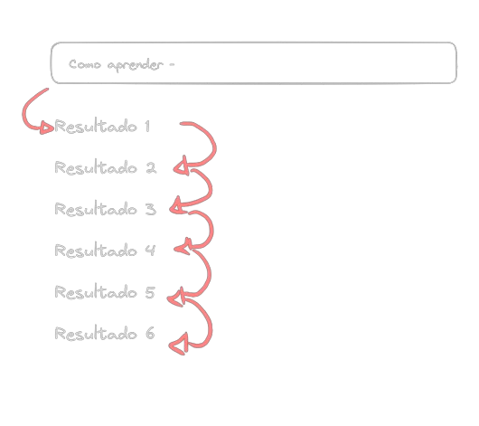
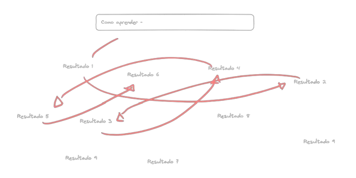
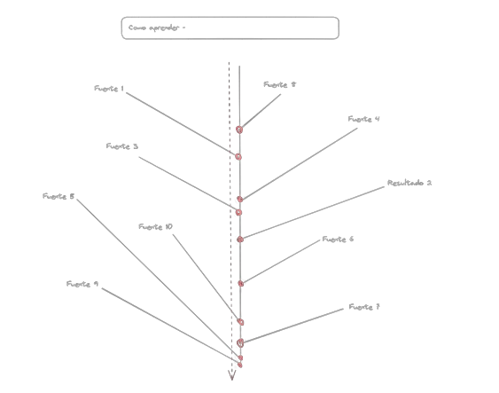

Leccion de ejemplo: InfoSnap
La busqueda
En la era de la información, el exceso de contenido en la web dificulta el aprendizaje eficiente de nuevos programas. La diversidad de resultados de búsqueda y formatos de información crea confusión, llevando a los usuarios a recorrer un camino complicado y poco efectivo.
Existe un dicho muy extendido en la era de la información, el cual dice que todo el conocimiento del mundo se encuentra la web. Irónicamente este dicho también se encuentra ahí.
Desde recetas de cocina hasta documentos detallados sobre ingeniería aeroespacial, todo esto solo necesitando una conexión a internet. Entonces imaginemos un usuario, el cual adquirió un nuevo software un tanto sofisticado, sabe lo que hace, ya que por eso lo ha descargado, sin embargo, como aun no esta familiarizado no sabe como lo hace. Esto de momento no importa, ya que piensa aprender en el camino así que le da doble click al instalador; siguiente, siguiente, aceptar, siguiente, cerrar instalador, abrir programa.
El programa se abre y frente a el una gran menú en la parte superior con un montón de opciones, los cuales abren mas opciones, abajo datos, a la izquierda otro menú y a la derecha mas opciones. En este momento nuestro usuario dice "Bueno tengo que aprender como hacer lo que este programa se supone que hace" y se apresura al buscador escribiendo "Como usar programa". Irónicamente, la primera fuente de información sobre el uso del programa paso frente a sus ojos mientras lo instalaba, en el paso que decía:
"Documentación oficial: [[visitar pagina web]]" ...siguiente.
Nuestro usuario entre tantas instrucciones y aceptar términos y condiciones sin leer, se ha saltado probablemente la mejor fuente de información sobre como usar el programa sin darse cuenta, pero no importa, ya que como hemos dicho todo el conocimiento del mundo esta en la web y por lo tanto, probablemente se vuelva a encontrar con el en algún momento.
Entonces, luego de que nuestro usuario tipea en el buscador y da enter, recibe un montón de resultados de fuentes distintas, por lo que va dando click, abriendo y cerrando ventanas leyendo solo los primeros 2 párrafos de cada sitio, pasando por Wikipedia, foros, artículos y hasta imágenes, algunos de calidad y otros no tanto, hasta que se cansa y decide buscar en YouTube "Como usar programa", le aparecen unos cuantos resultados, abre el que tenga la duración mas corta, el año mas reciente, calidad de audio, calidad de video o la combinación mas equilibrada de todos estos criterios, aun así, probablemente luego de abrir y cerrar algunos videos llegue a encontrarse con alguno de calidad y contenido aceptables que explique como hacer ciertas acciones de una forma especifica, sin considerar que quizás ese video es un tutorial para la versión del programa varias versiones atrás. Pero, aun sin ser perfecto, solo ese video a conseguido retener al usuario mas tiempo del que estuvo divagando en todos los otros sitios web juntos.
Nuestro usuario convencido de que ha aprendido algo, se dirige al programa y hace paso a paso lo mismo que vio en el video, termina, pero ahora quiere hacer algo que el video de 15 min no menciona, así que se dirige nuevamente al buscador y escribe "como hacer esto", divaga en la web, va a YouTube, encuentra un video que le guste, lo hace y vuelve a buscar otra cosa, repitiendo el ciclo.
Eventualmente, nuestro usuario llegara a aprender de una forma tanto ineficiente y muy superficialmente como usar el programa, para acciones especificas, pero aprenderá al fin y al cabo.
Entonces, querrá profundizar y se dará cuenta que ya no existen videos para lo que quiere hacer, así que esta vez buscara en chatGPT "como hacer esto con este programa", a lo que chatGPT le responderá de una respuesta con pasos que estarán en la dirección correcta, pero habrá un error, que nuestro aun novato usuario no identificara.
Debido al fracaso con preguntarle a la IA la acción especifica en un contexto especifico nuestro usuario se arma de valor, por lo que recurrirá a leer mas detenidamente los sitios web por los que antes divagaba, llegando eventualmente a la Documentación oficial, la información a la que tuvo acceso incluso antes de tener el programa instalado vuelve a el, ahí se encuentra todo lo que buscaba, pero... el sitio web es lento, el modo claro le quema los ojos y hay demasiado texto explicando cosas técnicas.
Finalmente, sin mas opciones y luego de darse cuenta que realmente no sabia tanto como creía, nuestro usuario quiere aprender de forma seria y cómoda, haciendo finalmente la pregunta correcta "Como funciona el programa", por lo que mira a los cursos de academias online, mira los módulos de contenido, el profesional guía y piensa "Si, creo que es de calidad", esta en lo correcto, pero los problemas de escalabilidad y el problema de actualizaciones en el formato de video continúan. Solo ha cambiado precio - por calidad.
Si bien, un curso de una academia online no es una mala fuente de conocimiento, nuestro usuario ha tenido que atravesar toda una odisea para finalmente llegar a la documentación oficial -la cual es poco cómoda y no ha leído- y la academia -la cual sigue teniendo defectos propios del formato y ha de pagar-.
El problema es que en realidad estamos yendo de un lugar a otro, pasando por wikipedia, Videos tutoriales, le terminamos preguntando a ChatGPT, nos responde algo sin sentido, etc.
Introducimos InfoSnap, una plataforma educativa diseñada para eliminar el caos de información en internet y proporcionar aprendizaje eficiente, estructurado y de calidad.
Orden Didáctico
Presentamos la información de manera óptima para facilitar el aprendizaje, guiando a los usuarios a través de un camino educativo efectivo.
Formatos Combinados
Utilizamos una combinación de texto, imágenes, videos e inteligencia artificial para aprovechar las ventajas de cada formato. Esto asegura una comprensión profunda y accesible del contenido.
Verificación de Contenido
Un equipo de profesionales y expertos garantiza la calidad y actualización continua del contenido.
Interfaz Simple y Accesible
Una interfaz diseñada para centrarse exclusivamente en el aprendizaje, eliminando distracciones innecesarias.
Escalabilidad y Actualización Fácil
InfoSnap permite modificar y actualizar el contenido de manera sencilla, asegurando una adaptabilidad continua a las necesidades de los usuarios.
Esto debido a que se escribe en formato markdown
¿Por qué InfoSnap?
Con InfoSnap, superamos los obstáculos del aprendizaje en línea, proporcionando una solución completa y efectiva. No más búsquedas interminables ni divagaciones. InfoSnap es la respuesta para aquellos que buscan aprender de manera eficiente y cómoda, eliminando la frustración asociada con la sobrecarga de información en la web.